화학분석기사 (2020-06-06 기출문제)
1과목: 화학분석 과정관리
1. 돌턴(Dalton)의 원자론에 의하여 설명될 수 없는 것은?
- 화학 평형의 법칙
- 질량 보존의 법칙
- 배수 비례의 법칙
- 일정 성분비의 법칙
(정답률: 68%)

2. AA를 이용하여 시료 중의 납을 분석하여 얻은 결과가 아래와 같을 때, 결과값을 분석한 것으로 틀린 것은? (단, 95% 신뢰구간의 student's t값은 3.182이다.) (문제 오류로 가답안 발표시 2번으로 발표되었지만 확정답안 발표시 2, 4번이 정답처리 되었습니다. 여기서는 가답인 2번을 누르면 정답 처리 됩니다.)
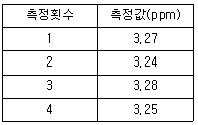
- 표준편차 : 0.018
- 상대표준편차 : 0.56
- 분산 : 3.3×10-4
- 95% 신뢰구간 : 3.26±0.02
(정답률: 67%)
3. 화합물 한 쌍을 같은 몰수로 혼합하는 다음 4가지 경우 중 염기성 용액이 되는 경우는 모두 몇 가지인가?
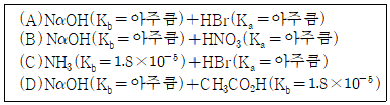
- 1
- 2
- 3
- 4
(정답률: 77%)
4. 기하 이성질체가 가능한 화합물은?
- (CH3)2C=CCl2
- (CH3)3CCCl3
- CH3ClC=CCH3Cl
- (CH3)2ClCCCH3Cl2
(정답률: 76%)
5. 헤테로 원자에 선택적이며 일반적으로 FID보다 감도가 좋고 동적 범위가 작은 NPD 검출기에 사용되는 원소는?
- S
- Cs
- Ru
- Re
(정답률: 38%)
6. 질소분자 1.07×1023개는 약 몇 몰인가?
- 11.4
- 0.178
- 6.85×1024
- 1.67×1021
(정답률: 81%)
7. 표면분석 장치 중 1차살과 2차살 모두 전자를 이용하는 것은?
- Auger 전자 분광법
- X-선 광전자 분광법
- 이차 이온 질량 분석법
- 전자 미세 탐침 미량 분석법
(정답률: 61%)
8. Kjeldahl법에 의한 질소의 정량에서, 비료 1.325g의 시료로부터 암모니아를 증류해서 0.2030N H2SO4 50mL에 흡수시키고, 과량의 산을 0.1908N NaOH로 역적정하였더니 25.32mL가 소비되었다. 시료 속의 질소의 함량(%)은?
- 2.6
- 3.6
- 4.6
- 5.6
(정답률: 39%)
9. 물에 대한 용해도가 가장 높은 두 물질로 짝지어진 것은?
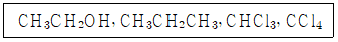
- CH3CH2OH, CHCl3
- CH3CH2OH, CCl4
- CH3CH2CH3, CHCl3
- CH3CH2CH3, CCl4
(정답률: 76%)
10. 정량분석 과정에 해당하지 않는 것은?
- 부피분석
- 관능기 분석
- 무게분석
- 기기분석
(정답률: 76%)
11. 브롬화이염화벤젠(Bromodichlorobenzene)이 가질 수 있는 구조이성질체의 수는?
- 3개
- 4개
- 5개
- 6개
(정답률: 52%)
12. 표준상태에서 S8 15g이 다음 반응식과 같이 완전 연소될 때 생성된 이산화황의 부피는 약 몇 L인가? (단, 기체는 이상기체이며 S8의 분자량은 256.48g/m이다.)
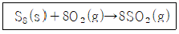
- 0.47
- 1.31
- 4.7
- 10.5
(정답률: 70%)
13. 탄화수소유도체를 잘못 나타낸 것은?
- R-OH:알코올
- R-CO-R:케톤
- R-CHO:에테르
- R-CONH2:아마이드
(정답률: 74%)
14. 분석계획 수립 시 필요한 지식이 아닌 것은?
- 표준분석법에 대한 지식
- 시험기구의 종류에 대한 지식
- 분석시험 절차에 대한 지식
- 동료 연구자에 대한 지식
(정답률: 82%)
15. 다음 설명에 가장 관련 깊은 것은?
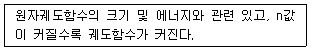
- 주양자수
- 부양자수(각운동량 양자수)
- 자기양자수
- 스핀양자수
(정답률: 79%)
16. 원자반지름이 작은 것부터 큰 순서로 나열된 것은? (단, 원자의 번호는 15P, 16S, 33As, 34Se이다.)
- P＜S＜As＜Se
- S＜P＜Se＜As
- As＜Se＜P＜S
- Se＜As＜S＜P
(정답률: 75%)
17. 이황화탄소(CS2)100.0g에 33.0g의 황을 녹여 만든 용액의 끓는점이 49.2℃일 때, 황의 분자량은 몇 g/mol인가? (단, 이황화탄소의 끓는점은 46.2℃이고, 끊는점 오름상수(Kb)는 2.35℃/m이다.)
- 161.5
- 193.5
- 226.5
- 258.5
(정답률: 48%)
18. UV 분광광도법의 인증 표준물질로서 이상적인 조건이 아닌 것은?
- 투과율이 파장에 따라 적합하게 변화할 것
- 투과율이 온도에 관계없이 일정할 것
- 반사율이 적고 간섭 현상이 없을 것
- 형광을 내지 말 것
(정답률: 53%)
19. 다음 설명 중 틀린 것은?
- 훈트의 규칙에 따라 7N에 존재하는 홀전자의 수는 3개다.
- 스핀 양자수는 자전하는 전자의 자전 에너지를 결정하는 것으로, -1/2, 0, +1/2의 값으로 존재한다.
- n=3인 전자 껍질에 들어갈 수 있는 총전자 수는 18개이다.
- 12Mg의 원자가전자의 수는 2개다.
(정답률: 70%)
20. 핵세인(hexane)이 가질 수 있는 구조 이성질체의 수는?
- 3개
- 4개
- 5개
- 6개
(정답률: 61%)
2과목: 화학물질 특성분석
21. 약산(HA)과 이의 나트륨 염(NaA)으로 이루어진 완충용액에 대한 설명으로 틀린 것은?
- 완충용액의
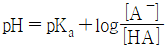
이다. - 완충용액을 희석하여도 pH 변화가 거의 없다.
- 완충용액의 완충 용량은 약산(HA)과 소듐염(NaA)의 농도에 무관하다.
- 완충용액의 완충 용량은
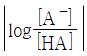
작을수록 크다.
(정답률: 66%)
22. pH=0.3인 완충용액에서 0.02 M Fe3+ 용액 10.0mL를 0.010M 아스코브산 용액으로 적정할 때 당량점에서의 전지 전압은 약 몇 V인가? (단, DAA:디하이드로아스코브산, AA:아스코브산의 약자이며, 전위는 백금 전극과 포화칼로멜 전극으로 측정하였으며, 포화칼로멜 전극의 E=0.241 V이다.)
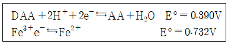
- 0.251V
- 0.295V
- 0.342V
- 0.492V
(정답률: 24%)
23. 다음 중 반응이 일어나기가 가장 어려운 것은?
- F2+I-
- I2+Cl-
- Cl2+Br-
- Br2+I-
(정답률: 62%)
24. N2O4(g)⇆2NO2(g)의 계가 평형상태에 있다. 이 때 계의 압력을 증가시켰을 때의 설명으로 옳은 것은?
- 정반응과 역반응의 속도가 함께 빨라져서 변함없다.
- 평형이 깨어지므로 반응이 멈춘다.
- 정반응으로 진행된다.
- 역반응으로 진행된다.
(정답률: 73%)
25. 다음 표준환원전위를 고려할 때 가장 강한 산화제는?
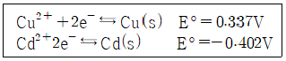
- Cu2+
- Cu(s)
- Cd2+
- Cd(s)
(정답률: 70%)
26. 원자 흡수 분광법과 원자 형광 분광법에서 기기의 부분 장치 배열에서의 가장 큰 차이는?
- 원자 흡수 분광법은 광원 다음에 시료가 나오고 원자 형광 분광법은 그 반대이다.
- 원자 흡수 분광법은 파장 선택기가 광원보다 먼저 나오고 원자 형광 분광법은 그 반대이다.
- 원자 흡광 분광법과는 다르게 원자 형광 분광법에서는 입사 광원과 직각 방향에서 형광선을 검출한다.
- 원자 흡수 분광법은 레이저 광원을 사용할 수 없으나 원자 형광 분광법에서는 사용 가능하다.
(정답률: 69%)
27. 분광광도법에서 시약 바탕(reagent blank)측정의 주 사용 목적은?
- 시약 또는 오염물질로 의한 흡수의 보정
- 시약의 순도 확인
- 분광광도계의 교정(calibration)
- 검출기의 감도 시험
(정답률: 65%)
28. 0.1M H2SO4 수용액 10mL에 0.⑤M NaOH 수용액 10mL를 혼합하였을 때 혼합 용액의 pH는? (단, 황산은 100% 이온화된다.)
- 0.875
- 1.125
- 1.25
- 1.375
(정답률: 47%)
29. 패러데이 상수의 단위(unit)로 옳은 것은?
- C/mol
- A/mol
- C/secㆍmol
- A/secㆍmol
(정답률: 75%)
30. 두 이온의 표준 환원 전위(E°)가 다음과 같을 때 보기 중 가장 강한 산화제는?
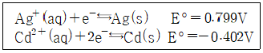
- Ag+(aq)
- Ag(s)
- Cd+(aq)
- Cd(s)
(정답률: 72%)
31. EDTA(etylenediaminetetraacetic acid, HAY)를 이용한 금속(Mn+) 적정 시 조건 형성 상수(conditional formation constant) Kf'에 대한 설명으로 틀린 것은? (단, K는 형성 상수이고 (EDTA)는 용액중의 EDTA 전체 농도이다.)
- EDTA(H4Y) 화학종 중 (Y4-)의 농도 분율을 αY4-로 나타내면, αY4-=[Y4-]/[EDTA]이고 Kf'=αY4-Kf이다.
- Kf'는 특정한 pH에서 형성되는 MYn-4의 양에 관련되는 지표이다.
- Kf'는 pH가 높을수록 큰 값을 갖는다.
- Kf를 이용하면 해리된 EDTA의 각각의 이온농도를 계산할 수 있다.
(정답률: 57%)
32. 수용액의 예상 어는점을 낮은 것부터 높은 순서로 옳게 나열한 것은?
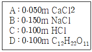
- A＜D＜C＜B
- D＜A＜C＜B
- B＜C＜A＜D
- B＜C＜D＜A
(정답률: 48%)
33. 0.10M KNO3와 0.10M Na2SO4 혼합용액의 이온 세기(M)는?
- 0.40
- 0.35
- 0.30
- 0.25
(정답률: 61%)
34. 0.08364M 피리딘 25.00mL를 0.1067M HCl로 적정하는 실험에서 HCl 4.63mL를 했을 때 용액의 pH는? (단 피리딘의 Kb=1.59×10-9이고, Kω=1.00×10-14이다.)
- 8.29
- 5.71
- 5.20
- 4.75
(정답률: 35%)
35. 표준상태에서 산화ㆍ환원 반응이 자발적으로 일어날 때의 조건으로 옳은 것은?
- ∆G°:+, K＞1, E°:-
- ∆G°:-, K＞1, E°:+
- ∆G°:-, K＜1, E°:+
- ∆G°:+, K＜1, E°:-
(정답률: 64%)
36. 다음 중 원자 분광법에서 화학적 간섭의 원인을 모두 선택한 것은?
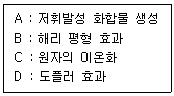
- A, B, D
- A, B, C
- A, C, D
- B, C, D
(정답률: 61%)
37. NaCl 수용액에 AgCl(s)을 녹여 포화된 수용액에 대한 설명 중 틀린 것은?
- Cl- 이온을 공통 이온이라 한다.
- NaCl을 더 가하면 AgCl(s) 이 생성된다.
- NaBr을 가하면 AgCl(s)이 증가한다.
- 용액에 암모니아(NH3)를 가하면 AgCl(s)의 용해도가 증가한다.
(정답률: 57%)
38. 25℃ 0.01M NaCl 용액의 pOH는? (단, 25℃에서 이온 세기가 0.01M인 용액의 활동도 계수는 γH+=0.83, γOH=0.76이고, Kω=1.0×10-14이다.)
- 7.02
- 7.00
- 6.98
- 6.96
(정답률: 45%)
39. 갈바니(혹은 불타) 전지에 대한 설명 중 틀린 것은?
- (+)극에서 환원이 일어난다.
- (-)극에서 산화가 일어난다.
- 일회용 건전지는 갈바니 전지의 원리를 이용한 것이다.,
- 산화-환원 반응을 통한 전기에너지를 화학에너지로 바꾼다.
(정답률: 72%)
40. 0.0100(±0.0001) mol의 NaOH를 녹여 1.000(±0.001) L로 만든 수용액의 pH 오차 범위는? (단, Kω=1×10-14는 완전수이다.)
- ±0.013
- ±0.024
- ±0.0043
- ±0.0048
(정답률: 34%)
3과목: 화학물질 구조분석
41. 유리전극은 다음 중 어떤 이온에 대한 선택성 전극인가?
- 염소 음이온
- 칼슘 양이온
- 구리 양이온
- 수소 양이온
(정답률: 63%)
42. 질량분석법에서 분자이온 봉우리를 확인하기 가장 쉬운 이온화 방법은?
- 전자충격 이온화법
- 장이온화법
- 장탈착이온화법
- 레이저 탈차 이온화법
(정답률: 37%)
43. 조절환원전극 전기분해장치에서 일정하게 유지하는 전위는?
- 전지 전위
- 산화전극 전위
- 환원전극 전위
- 염다리 접촉전위
(정답률: 40%)
44. 자기장부채꼴 분석계에서 자기장의 세기가 0.1T(0.1W/m2), 곡면 반지름이 0.1m, 가속전위가 100V라면 이온 수집관에 도달하는 +1가로 하전 된 물질의 원자량은?
- 40.16
- 44.16
- 48.16
- 52.16
(정답률: 28%)
45. 용액의 비전기전도도(Specific electic conductivity)에 대한 설명 중 틀린 것은?
- 용액의 비전기전도도는 이동도에 비레한다.
- 용액의 비전기도도는 농도에 비레한다.
- 용액 중의 이온의 비전기전도도는 하전수에 반비례한다.
- 수용액의 비전기전도도는 0.10Mah KCl용액을 써서 용기 상수(Cell constant)를 구해 두면, 측정 전도도값으로부터 계산할 수 있다.
(정답률: 52%)
46. 열중량분석기(TGA)에서 시료가 산화되는 것을 막기 위해 넣어주는 기체는?
- 산소
- 질소
- 이산화탄소
- 수소
(정답률: 68%)
47. 고성능 액체 크로마토그래피의 검출기로 사용하지 않은 것은?
- 자외선-가시선광도계
- 전도도 검출기
- 전자포획검출기
- 전기화학적 검출기
(정답률: 37%)
48. 적외선 흡수 스펙트럼에서 흡수 봉우리의 파수는 화학 결합에 대한 힘상수의 세기와 유효질량에 의존한다. 다음 중 흡수 파수가 가장 큰 신축 진동은?
- ≡C-H
- ＝C-H
- -C-H
- -C≡C-
(정답률: 66%)
49. FT-NMR에서 스캔수(N)가 10일 때 어떤 피크의 신호대잡음비(S/N ratio)를 계산하였더니 40이었다. 스캔수(N)가 40일 때, 같은 피크의 S/N ratio는?
- 160
- 80
- 40
- 10
(정답률: 52%)
50. 60 MHz NMR에서 스핀-스핀 갈라짐이 12Hz인 짝지음 상수(coupling constant)는 300MHz NMR에서는 ppm단위로 얼마인가?
- 0.04
- 0.12
- 0.2
- 12
(정답률: 32%)
51. 열중량분석기(TGA)의 구성이 아닌 것은?
- 단색화장치
- 온도 감응장치
- 저울
- 전기로
(정답률: 70%)
52. 표준수소전극(SHE)에 대한 설명으로 틀린 것은?
- 표준수소전극의 전위는 0이다.
- 표준수소전극의 전위는 용액의 수소이온 활동도에 의존한다.
- 표준수소전극은 산화전극 또는 환원전극으로 작용한다.
- 표준수소전극의 전위는 수소 기체의 압력과는 무관하다.
(정답률: 64%)
53. 다음 보기에서 기체 크로마토그래피(GC)이 이동상으로 쓰이는 것을 고르면?
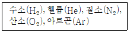
- 헬륨(He), 질소(N2), 산소(O2), 수소(H2), 아르곤(Ar)
- 헬륨(He), 질소(N2), 수소(H2)
- 질소(N2). 산소(O2), 수소(H2)
- 헬륨(He), 질소(N2), 산소(O2)
(정답률: 63%)
54. 초임계 유체 크로마토그래피에 대한 설명으로 틀린 것은?
- 초임계 유체에서는 비휘발성 분자가 잘 용해되는 장점이 있다.
- 비교적 높은 온도를 사용하므로 분석물들의 회수가 어렵다.
- 이산화탄소가 초임계 유체로 널리 사용된다.
- 액체 크로마토그래피보다 환경친화적인 분석 방법이다.
(정답률: 64%)
55. 시차열법분석(DTA)으로 벤조산 시료 측정 시 대기압에서 측정할 때와 200psi에서 측정할 때 봉우리가 일치하지 않은 이유를 가장 잘 설명한 것은?
- 모세관법으로 측정하지 않았기 때문이다.
- 높은 압력에서 시료가 파괴되었기 때문이다.
- 높은 압력에서 밀도의 차이가 생겼기 때문이다.
- 높은 압력에서 끓는점이 영향을 받았기 때문이다.
(정답률: 66%)
56. 액체 크로마토그래피 중 일정한 구멍 크기를 갖는 입자를 정지상으로 이용하는 방법은?
- 분배 크로마토그래피
- 흡착 크로마토그래피
- 이온 크로마토그래피
- 크기배제 크로마토그래피
(정답률: 67%)
57. 탄산철(FeCO3)의 용해도 곱을 구하면?
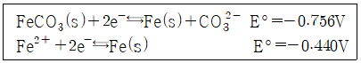
- 2×10-10
- 2×10-11
- 2×10-12
- 2×10-13
(정답률: 41%)
58. 질량 분석계를 이용하여 C2H4+(m=28.0313)과 CH2N+(m=27.9949)이온을 분리 하려면 분리능이 얼마나 되어야 하는가?
- 770
- 1170
- 1970
- 2270
(정답률: 63%)
59. 적외선 흡수 분광도법에서 사용되는 시료용기로 적당한 것은?
- 염화나트륨
- 실리카
- 유리
- 석영
(정답률: 50%)
60. 고체표면의 원소 성분을 정량하는데 주로 사용되는 원자 질량분석법은?
- 양이온 검출법과 음이온 검출법
- 이차이온 질량분석법과 글로우 방전질량분석법
- 레이저 마이크로탐침 질량분석법과 글로우 방전 질량분석법
- 이차이온 질량분석법과 레이저 마이크로탑침 질량분석법
(정답률: 48%)
4과목: 시험법 밸리데이션
61. 전처리과정에서 발생 가능한 오차를 줄이기 위한 시험법 중 시료를 사용하지 않고 기타 모든 조건을 시료 분석법과 같은 방법으로 실험하는 방법은?
- 맹시험
- 공시험
- 조절시험
- 회수시험
(정답률: 67%)
62. 식품의약품안전처의 밸리데이션 표준수행절차 중 시험장비 밸리데이션 이력에 포함될 항목이 아닌 것은?
- 자산번호
- 장비명(영문)
- 장비코드 변경내역
- 밸리데이션 승인 담당자
(정답률: 58%)
63. 인증표준물질(CRM)을 이용하여 투과율을 8회 반복 측정한 결과와 T-table을 활용하여, 이 실험의 측정 신뢰도가 95%일 때 우연불확도로 옳은 것은? (문제 오류로 가답안 발표시 3번으로 발표되었지만 확정답안 발표시 전항 정답 처리 되었습니다. 여기서는 가답안인 3번을 누르면 정답 처리 됩니다.)
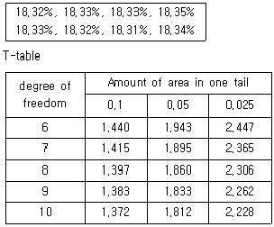
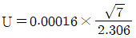
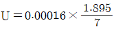
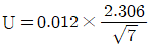
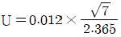
(정답률: 60%)
64. 검정곡선 작성 방법에 대한 내용 중 옳은 것을 모두 고른 것은?
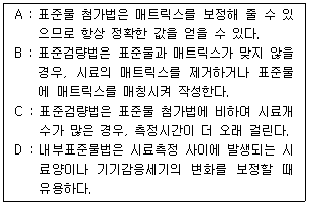
- A, B, C
- A, D
- B, D
- B, C, D
(정답률: 43%)
65. 표준수행절차(SOP)의 운전성능 적격성 평가의 구성 요소가 아닌 것은?
- 목적(purpose)
- 적용범위(scope)
- 의무이행조건(responsibilties)
- 시험ㆍ교정(test and calibration)
(정답률: 55%)
66. 방법 검증(method validation)에 포함되는 정밀도가 아닌 것은?
- 최종 정밀도
- 중간 정밀도
- 기기 정밀도
- 실험실간 정밀도
(정답률: 47%)
67. 화학분석 결과의 정확한 판정을 위해 필요한 유효숫자와 오차에 대한 설명 중 옳은 것은?
- 어떤 값에 대한 유효 숫자의 수는 과학적인 표시법으로 값을 기록하는 데 필요한 최대한의 자릿수이다.
- 곱셈과 나눗셈에서 유효 숫자의 수는 일반적으로 자릿수가 가장 큰 숫자에 의해서 제한된다.
- 우연(불가측) 오차는 주로 정밀도(재현성)에 영향을 주며, 약간의 우연 오차는 항상 존재한다.
- 계통(가측) 오차는 주로 정확도에 영향을 미치며, 제거할 수 없는 오차이다.
(정답률: 60%)
68. HPLC의 장비 및 소모품에 대한 설명으로 틀린 것은?
- 시료 주입용 주사기:시험 횟수와 바늘의 마모상태를 고려하여 교체주기를 결정해야한다.
- HPLC 검출기 램프:예상하지 못한 상황에 대비하여 여분의 램프를 준비해 놓아야 한다.
- HPLC 펌프:펌프 출력에 펄스가 없을 경우 교체한다.
- HPLC 보호컬럼:주기적 교체를 통해 분석컬럼의 수명을 늘릴 수 있다.
(정답률: 61%)
69. 시험장비 밸리데이션 범위에 포함되지 않는 것은?
- 설계 적격성 평가
- 설치 적격성 평가
- 가격 적격성 평가
- 운전 적격성 평가
(정답률: 72%)
70. 밸리데이션 항목 중 Linearity시험 결과의 해석으로 틀린 것은? (문제 오류로 가답안 발표시 2번으로 발표되었지만 확정답안 발표시 2, 4번이 정답처리 되었습니다. 여기서는 확정답안인 2번을 누르면 정답 처리 됩니다.)
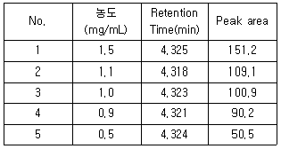
- Retention time의 RSD%:0.06%
- y절편:81.5
- 기울기:100.46
- 상관계수:0.9995
(정답률: 62%)
71. 재현성에 관한 내용이 아닌 것은?
- 연구실 내 재현성에서 검토가 필요한 대표적인 변동 요인은 시험일, 시험자, 장치 등이다.
- 연구실 간 재현성은 실험실 간의 공동실험 시 분석법을 표준화 할 필요가 있을 때 평가한다.
- 연구실 간 재현성이 표현된다면 연구실 내 재현성은 검증할 필요가 없다.
- 재현성을 검증할 때는 분석법의 전 조작을 6회 반복 측정하여 상대표준편차값이 3% 이내가 되어야 한다.
(정답률: 52%)
72. 의약품 제조 및 품질관리에 관한 규정상 시험방법 밸리데이션을 생략할 수 있는 품목으로 틀린 것은?
- 대한민국약전에 실려 있는 품목
- 식품의약품안전처장이 기준 및 시험방법을 고시한 품목
- 밸리데이션을 실시한 품목과 주성분의 함량은 동일하나 제형만 다른 품목
- 원개발사의 시험방법 밸리데이션 자료, 시험방법 이전을 받았음을 증빙하는 자료 및 제조원의 실험실과의 비교시험 자료가 있는 품목
(정답률: 63%)
73. 확인 시험(identification)의 밸리데이션에서 일반적으로 필요한 평가 파라미터는?
- 정확성
- 특이성
- 직선성
- 검출한계
(정답률: 55%)
74. 이화학 분석에 관현된 설명 중 틀린 것은?
- 시험에 필요한 유리기구를 세척, 건조해야 하며, 이 때 이전에 사용한 시약 또는 분석대상물질이 남아 있지 않도록 분석이 완료된 후 철저히 세척해야 한다.
- 분석결과의 통계처리는 일반적으로 평균, 표준편차 및 상대표준편차가 많이 이용된다.
- 정확성은 측정값이 참값에 근접한 정도를 말한다.
- 정밀성은 데이터의 입출력과 흐름을 추적하고 조작을 방지하는 시스템을 말한다.
(정답률: 67%)
75. 평균값이 4.74이고, 표준편차가 0.11일 때 분산계수(CV)는?
- 0.023%
- 2.3%
- 4.3%
- 43.09%
(정답률: 55%)
76. 검량선에서 y절편의 표준편차가 0.1, 기울기가 0.1일 때의 정량한계는?
- 10
- 1
- 0.1
- 3.3
(정답률: 48%)
77. 편극성의 변화를 기초로 시료를 파괴하지 않고 측정하는 분석 장비는?
- 라만 분광기
- 형광 분광기
- FT-IR 현미경
- 근적외선 분광기
(정답률: 49%)
78. 정량분석을 위해 분석물질과 다른 화학적으로 안정한 화합물을 미지시료에 점가하는 것은?
- 절대검량선법
- 표준첨가법
- 내부표준법
- 분광간선법
(정답률: 41%)
79. 단일-용액 표준물 첨가법(standard addition to a single solution)에 관한 설명 중 틀린 것은? (단, x축:
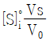
, y축: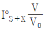
인 그래프를 기준으로 한다.)- 표준물을 첨가할 때마다 분석물 신호를 측정한다.
- 매트릭스를 변화시키지 않도록 가능한 한 적은 부피의 표준물을 첨가한다.
- 묽힘을 고려하여검출기 감응을 보정한 후 y축에 도시한다.
- 보정된 감응 대 묽혀진 표준물 부피 그래프의 y절편이 미지 분석물의 농도이다.
(정답률: 43%)
80. 유효숫자 표기 방법에 의한 계산 결과 값이 유효숫자 2자리인 것은?
- (7.6-0.34)÷1.95
- (1.⑤×104)×(9.92×106)
- 850000-(9.0×105)
- 83.25×102+1.35×102
(정답률: 57%)
5과목: 환경·안전관리
81. 화학물질 및 물리적 인자의 노출기준에 대한 설명 중 틀린 것은?
- 단시간노출기준(STEL)은 15분간의 시간가중평균노출값으로서 근로자가 STEL이하로 유해인자에 노출되기 위해선 1회 노출 지속시간이 15분 미만이어야 하고, 1일 4회 이하로 발생해야하며, 각 노출의 간격은 60분 이하이어야 한다.
- 최고노출기준(C)은 근로자가 1일 작업 시간 동안 잠시라도 노출되어서는 아니 되는 기준을 말하며, 노출기준 앞에 C를 붙여 표시 한다.
- 시간가중평균노출기준(TWA)은 1일 8시간 작업을 기준으로 하여 유해 인자의 측정치에 발생 시간을 곱하여 8시간으로 나눈 값을 말한다.
- 특정 유해인자의 노출기준이 규정되지 않았을 경우 ACGIH의 TLVs를 준용한다.
(정답률: 54%)
82. 수소와 산소 기체를 반응시켜 수증기를 형성하는 다양한 경로를 통해 측정되는 반응열에 대한 설명으로 틀린 것은? (단, 각 경로의 반응열 측정은 동일한 온도에서 측정하였다고 가정한다.)
- 촉매 없이 반응을 천천히 진행시켜 54.6kcal/mol의 반응열을 측정하였다.
- 스파크를 가하여 폭발적인 반응을 진행시켜 54.6kcal/mol의 반응열을 측정하였다.
- 아연 가루를 촉매로 가하여 반응을 빠르게 진행시켰으며, 54.6kcal/mol의 반응열을 측정하였다.
- 반응기에 백금선을 추가하여 반응을 대용량으로 진행시켰으며, 109.2kcal/mol의 반응열을 측정하였다.
(정답률: 56%)
83. 분진 폭발을 일으키는 금속분말이 아닌 것은?
- 마그네슘
- 백금
- 티타늄
- 알루미늄
(정답률: 61%)
84. 어떤 방사능 폐기물에서 방사능 정도가 12차 반감기가 지난 후에 비교적 무해하게 될 것이라고 가정한다. 이 기간 후 남아 있는 방사성 물질의 비는?
- 0.0144%
- 0.0244%
- 0.0344%
- 0.0444%
(정답률: 59%)
85. 위험물안전관리법 시행령상 제1류 위험물과 가장 유사한 화학적 특성을 갖는 위험물은?
- 제2류 위험물
- 제4류 위험물
- 제5류 위험물
- 제6류 위험물
(정답률: 63%)
86. 인화성 유기용매의 성질이 아닌 것은?
- 인화성 유기용매의 액체 비중은 대부분 물보다 가볍고 소수성이다.
- 인화성 유기용매의 증기 비중은 공기보다 작기 때문에 공기보다 높은 위치에서 확산된다.
- 일반적으로 정전기의 방전 불꽃에 인화되기 쉽다.
- 화기 등에 의한 인화, 폭발위험성이 있다.
(정답률: 65%)
87. 화학물질의 분류ㆍ표시 및 물질안전보건자료에 관한 기준에 따른 경고표지의 색상 및 위치에 대한 설명으로 옳은 것은?
- 경고표지전체의 바탕은 흰색으로, 글씨와 테두리는 검정색으로 하여야 한다.
- 예방조치 문구를 생략해도 된다.
- 비닐포대 등 바탕색을 흰색으로 하기 어려운 경우에는 그 포장 또는 용기의 표면을 바탕색으로 사용할 수 없다.
- 그림문자는 유해성ㆍ위험성을 나타내는 그림과 테두리로 구성하며, 유해성ㆍ위험성을 나타내는 그림은 백색으로 한다.
(정답률: 55%)
88. 대기 환경 보전법 시행 규칙상 장거리 이동 대기오염 물질이 아닌 것은?
- 미세먼지
- 납 및 그 화합물
- 알코올류
- 포름알데히드
(정답률: 68%)
89. 황린을 제외한 제3류 위험물 취급 시 유의 사항으로 틀린 것은?
- 강산화제, 강산류 등과 접촉에 주의한다.
- 대기 중에서 공기와 접촉하여 자연 발화하는 때도 있다.
- 대량의 물을 주수하여 초기 냉각소화한다.
- 보호액 속에 저장할 때는 위험물이 보호액 표면에 노출되지 않도록 주의한다.
(정답률: 67%)
90. 화학실험실에서 구비해야 하는 분말 소화기에는 소화분말이 포함되어 있다. 다음 중 소화분말의 화학 반응으로 틀린 것은?
- 2NaHCO3→Na2CO3+CO2+H2O
- 2KHCO3→K2CO3+CO2+H2O
- NH4H2PO4→HPO3+NH3+H2O2
- 2KHCO3+(NH2)2CO→K2CO3+2NH3+2CO2
(정답률: 62%)
91. CO2 소화기의 사용시 주의 사항으로 옳은 것은?
- 모든 화재에 소화효과를 기대할 수 있음
- 모든 호화기 중 가장 소화효율이 좋음
- 잘못 사용할 경우 동상 위험이 있음
- 반영구적으로 사용할 수 있음
(정답률: 64%)
92. 물질안전보건자료(GHS/MSDS)의 표시사항에서 폭발성 물질(등급 1.2)의 구분기준으로 옳은 것은?
- 대폭발의 위험성이 있는 물질, 혼합물과 제품
- 대폭발의 위험성은 없으나 발사 위험성(projection hazard) 또는 약한 발사 위험성(projection hazard)이 있는 물질, 혼합물과 제품
- 대폭발의 위험성은 없으나 화재 위험성이 있고 약한 폭풍 위험성(blast hazard) 또는 약한 발사 위험성(projection hazatd)이 있는 물질, 혼합물과 제품
- 심각한 위험성은 없으나 발화 또는 기폭에 의해 약간의 위험성이 있는 물지, 혼합물과 제품
(정답률: 53%)
93. 반응성이 매우 큰 물질로서 항상 불활성 기체 속에서 취급해야하는 물질은?
- 트리에틸알루미늄
- 하이드록실아민
- 과염소산
- 플루오린화수소
(정답률: 50%)
94. 산화ㆍ환원 반응과 관련된 설명으로 틀린 것은?
- 산화제는 산화ㆍ환원 반응에서 자신은 환원되면서 상대 물질을 산화시키는 물질이다.
- 환원제는 산화ㆍ환원 반응에서 산화수가 증가한다.
- 이산화황은 환원제이지만 더 환원력이 강한 황화수소 등과 반응할 때에는 산화제로 사용된다.
- 같은 주기에서 알칼리토급속보다 알칼리금속이 더 환원되기 쉽다.
(정답률: 57%)
95. 화학물질의 분류ㆍ표시 및 물질안전보건자료에 관한 기준에서 물질안전보건자료 작성 시 혼합물의 유해성ㆍ위험성을 결정하는 방법으로 틀린 것은? (단, ATE는 급성독성추정값, C는 농도를 의미한다.)
- 혼합물 전체로서 시험된 자료가 있는 경우에는 그 시험결과에 따라 단일물질의 분류기준을 적용한다.
- 혼합물 전체로서 시험된 자료는 없지만, 유사 혼합물의 분류자료 등을 통하여 혼합물 전체로서 판단할 수 있는 근거자료가 있는 경우에는 희석값을 대푯값으로 하여 적용ㆍ분류한다.
- 혼합물 전체로서 유해성을 평가할 자료는 없지만, 구성성분의 유해성 평가자료가 있는 경우의 급성독성 추정값 공식은 개별 성분의 농도/급성독성추정값의 조화평균이다.
- 혼합물 전체로서 유해성을 평가할 자료는 없지만, 구성성분의 90% 미만 성분의 유해성 평가자료가 있거나 추정 가능할 경우의 급성독성 추적 값 공식은
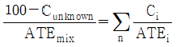
이다.
(정답률: 48%)
96. 폐기물관리법시행령상 지정폐기물에 해당되지 않는 것은?
- 고체상태의 폐합성 수지
- 농약의 제조ㆍ판매업소에서 발생되는 폐농약
- 대기오염 방지시설에서 포집된 분진
- 폐유기용제
(정답률: 52%)
97. 아래의 가스로 인한 상해로 가장 알맞은 것은?
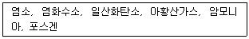
- 부식
- 폭발
- 저온화상
- 가스중독
(정답률: 70%)
98. 물과 접촉하면 위험한 물질로 짝지어진 것은?
- K, CaC2, CKlO4
- K2O, K2Cr2O7, CH3CHO
- K2O2, K, CaC2
- Na, KMnO4, NaClO4
(정답률: 55%)
99. 인화성 액체와 함께 보관이 불가능한 물질은?
- 염기류
- 산화제류
- 환원제류
- 모든 수용액
(정답률: 61%)
100. 다음 설명에 해당하는 시료 채취방법은?
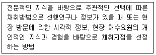
- 유의적 샘플링
- 임의적 샘플링
- 계통 표본 샘플링
- 층별 임의 샘플링
(정답률: 59%)